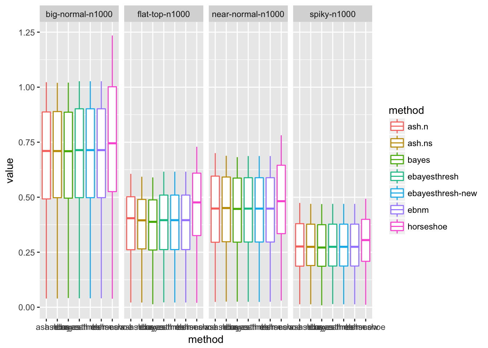
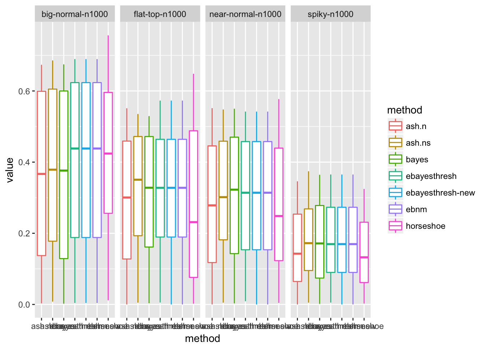

Plots summarizing normal means comparisons
Matthew Stephens
2017-02-14
Last updated: 2017-02-27
Code version: 6038d25
Summary
Here I want to plot some graphs summarizing results of comparing methods for the normalmeans problem.
load("../output/dsc-normalmeans-files/res.RData")Extract the sample size n from the names
strip = function(x){substr(x,3,nchar(x))}
pattern= "-n[0-9]+"
nn = regmatches(res$scenario,regexpr(pattern, res$scenario))
res$n = as.numeric(lapply(nn,strip))
res$name = unlist(strsplit(res$scenario,"-n[0-9]+"))
res$MSE= res$RMSE^2xtabs(RMSE ~ n + method + name, aggregate(RMSE ~n + method + name , data=res, FUN=mean)), , name = big-normal
method
n ash.n ash.ns bayes ebayesthresh horseshoe
10 0.7582732 0.7334213 0.6957260 0.7300088 0.7443192
100 0.7886309 0.7877238 0.7806530 0.7902551 0.8205028
1000 0.7836515 0.7841278 0.7825631 0.7882545 0.8217297
, , name = big-normal-nn
method
n ash.n ash.ns bayes ebayesthresh horseshoe
10 0.0000000 0.0000000 0.0000000 0.0000000 0.0000000
100 0.0000000 0.0000000 0.0000000 0.0000000 0.0000000
1000 0.9743579 0.9707671 0.9703364 0.9794093 1.0934570
, , name = bimodal
method
n ash.n ash.ns bayes ebayesthresh horseshoe
10 0.9102702 0.7479094 0.6865849 0.7543521 0.7940930
100 0.8172897 0.7867014 0.7621571 0.8033853 0.8585379
1000 0.7791208 0.7772032 0.7614577 0.7954457 0.8574310
, , name = bimodal-nn
method
n ash.n ash.ns bayes ebayesthresh horseshoe
10 0.0000000 0.0000000 0.0000000 0.0000000 0.0000000
100 0.0000000 0.0000000 0.0000000 0.0000000 0.0000000
1000 0.9249406 0.9150988 0.8547307 0.9698219 1.1184711
, , name = flat-top
method
n ash.n ash.ns bayes ebayesthresh horseshoe
10 0.6962684 0.6079747 0.5467652 0.6046484 0.6163404
100 0.6358898 0.5961876 0.5803188 0.5993322 0.6391464
1000 0.5943837 0.5888332 0.5847994 0.5937016 0.6566934
, , name = flat-top-nn
method
n ash.n ash.ns bayes ebayesthresh horseshoe
10 0.0000000 0.0000000 0.0000000 0.0000000 0.0000000
100 0.0000000 0.0000000 0.0000000 0.0000000 0.0000000
1000 0.7619705 0.7479179 0.7408124 0.7705141 0.8474205
, , name = near-normal
method
n ash.n ash.ns bayes ebayesthresh horseshoe
10 0.6600231 0.6077944 0.5664028 0.6005271 0.6022923
100 0.6547495 0.6388990 0.6270685 0.6370520 0.6549208
1000 0.6342340 0.6325884 0.6296679 0.6316332 0.6685089
, , name = near-normal-nn
method
n ash.n ash.ns bayes ebayesthresh horseshoe
10 0.0000000 0.0000000 0.0000000 0.0000000 0.0000000
100 0.0000000 0.0000000 0.0000000 0.0000000 0.0000000
1000 0.8148900 0.8098425 0.8077214 0.8100041 0.8562830
, , name = skew
method
n ash.n ash.ns bayes ebayesthresh horseshoe
10 0.7014163 0.6510493 0.5856113 0.6385197 0.6323798
100 0.7094677 0.6992390 0.6767473 0.6978746 0.7100922
1000 0.6907462 0.6899737 0.6760921 0.6895233 0.7070466
, , name = spiky
method
n ash.n ash.ns bayes ebayesthresh horseshoe
10 0.4484726 0.4534599 0.4208105 0.4505319 0.4330985
100 0.5108843 0.5077528 0.4919201 0.5058997 0.5105392
1000 0.5054088 0.5052648 0.5017803 0.5044794 0.5257607
, , name = t4
method
n ash.n ash.ns bayes ebayesthresh horseshoe
10 0.9738599 0.8299508 0.0000000 0.8255729 0.8522902
100 0.8425060 0.8041172 0.0000000 0.8037822 0.8386872
1000 0.7932361 0.7875069 0.0000000 0.7883558 0.8258498
, , name = vbignormal-nn
method
n ash.n ash.ns bayes ebayesthresh horseshoe
10 0.0000000 0.0000000 0.0000000 0.0000000 0.0000000
100 0.0000000 0.0000000 0.0000000 0.0000000 0.0000000
1000 0.9981750 0.9955789 0.9953636 0.9968373 1.0825444Puzzling about this plot: why does the bayes rule vary with n?
ALPHALEVEL=0.2
library(ggplot2)
stat_sum_single <- function(fun, geom="point", ...) {
stat_summary(fun.y=fun, colour="red", geom=geom, size = 3, ...)
}
rmse_plot=ggplot2::ggplot(res,
aes(log10(n),RMSE,colour=method,alpha=ALPHALEVEL)) + stat_summary(fun.y=mean,geom="line") +
facet_grid(. ~ name) +
guides(alpha=FALSE) +
xlab("log10(n)") +
ylab("RMSE")
print(rmse_plot)Warning: Removed 322 rows containing non-finite values (stat_summary).geom_path: Each group consists of only one observation. Do you need to
adjust the group aesthetic?
geom_path: Each group consists of only one observation. Do you need to
adjust the group aesthetic?
geom_path: Each group consists of only one observation. Do you need to
adjust the group aesthetic?
geom_path: Each group consists of only one observation. Do you need to
adjust the group aesthetic?
geom_path: Each group consists of only one observation. Do you need to
adjust the group aesthetic?Maybe Bayes won’t vary by n without square-root.
ALPHALEVEL=0.2
library(ggplot2)
stat_sum_single <- function(fun, geom="point", ...) {
stat_summary(fun.y=fun, colour="red", geom=geom, size = 3, ...)
}
mse_plot=ggplot2::ggplot(res,
aes(log10(n),MSE,colour=method,alpha=ALPHALEVEL)) + stat_summary(fun.y=mean,geom="line") +
facet_grid(. ~ name) +
guides(alpha=FALSE) +
xlab("log10(n)") +
ylab("MSE")
print(mse_plot)Warning: Removed 322 rows containing non-finite values (stat_summary).geom_path: Each group consists of only one observation. Do you need to
adjust the group aesthetic?
geom_path: Each group consists of only one observation. Do you need to
adjust the group aesthetic?
geom_path: Each group consists of only one observation. Do you need to
adjust the group aesthetic?
geom_path: Each group consists of only one observation. Do you need to
adjust the group aesthetic?
geom_path: Each group consists of only one observation. Do you need to
adjust the group aesthetic?Plot boxplot of results for n=1000, and the main three methods of interest: ash.ns, ebayesthresh and horseshoe. Notice that horseshoe does less well than ebayesthresh, contrasting with results in the original paper. I believe this is because they did a different problem, where sigma (errror variance) is considered unknown and to be estimated.
bplot = function(res,scen.subset = c("big-normal-n1000","spiky-n1000","near-normal-n1000","flat-top-n1000"),
methods.subset = c("ash.ns","ebayesthresh","horseshoe"), criteria="MSE"){
res.filter = dplyr::filter(res,scenario %in% scen.subset & method %in% methods.subset)
res.filter$value = res.filter[[criteria]]
ggplot(res.filter,aes(method,value,color=method)) + geom_boxplot() + facet_grid(.~scenario)
}
bplot(res)Warning: Removed 10 rows containing non-finite values (stat_boxplot).
bplot(res,scen.subset = c("bimodal-nn-n1000","vbignormal-nn-n1000","big-normal-nn-n1000","near-normal-nn-n1000","flat-top-nn-n1000"))Warning: Removed 11 rows containing non-finite values (stat_boxplot).
Session Information
sessionInfo()R version 3.3.2 (2016-10-31)
Platform: x86_64-apple-darwin13.4.0 (64-bit)
Running under: OS X El Capitan 10.11.6
locale:
[1] en_US.UTF-8/en_US.UTF-8/en_US.UTF-8/C/en_US.UTF-8/en_US.UTF-8
attached base packages:
[1] stats graphics grDevices utils datasets methods base
other attached packages:
[1] ggplot2_2.2.1 mixfdr_1.0 ashr_2.1.5 dscr_0.1.1
loaded via a namespace (and not attached):
[1] Rcpp_0.12.9 git2r_0.18.0 workflowr_0.3.0
[4] plyr_1.8.4 iterators_1.0.8 tools_3.3.2
[7] digest_0.6.12 evaluate_0.10 tibble_1.2
[10] gtable_0.2.0 lattice_0.20-34 Matrix_1.2-8
[13] foreach_1.4.3 rstudioapi_0.6 DBI_0.5-1
[16] shiny_1.0.0 yaml_2.1.14 parallel_3.3.2
[19] dplyr_0.5.0 stringr_1.2.0 knitr_1.15.1
[22] REBayes_0.73 rprojroot_1.2 grid_3.3.2
[25] R6_2.2.0 EbayesThresh_1.3.2 rmarkdown_1.3
[28] whisker_0.3-2 reshape2_1.4.2 magrittr_1.5
[31] backports_1.0.5 scales_0.4.1 codetools_0.2-15
[34] htmltools_0.3.5 MASS_7.3-45 assertthat_0.1
[37] horseshoe_0.1.0 mime_0.5 colorspace_1.3-2
[40] xtable_1.8-2 httpuv_1.3.3 labeling_0.3
[43] stringi_1.1.2 Rmosek_7.1.2 lazyeval_0.2.0
[46] munsell_0.4.3 doParallel_1.0.10 pscl_1.4.9
[49] truncnorm_1.0-7 SQUAREM_2016.8-2 This R Markdown site was created with workflowr